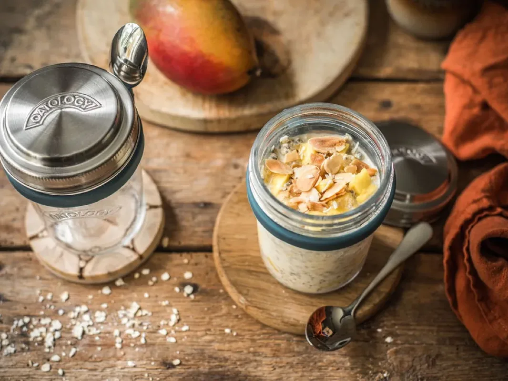
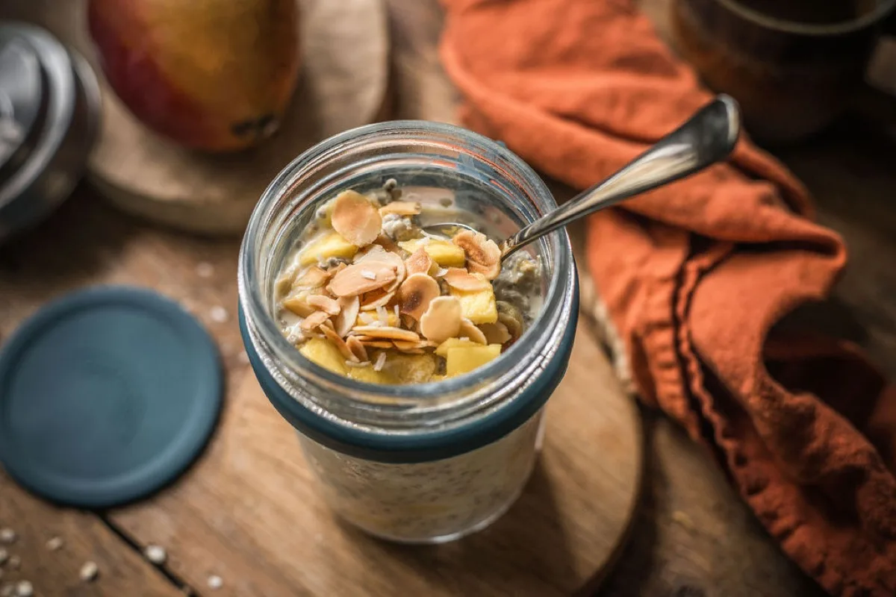
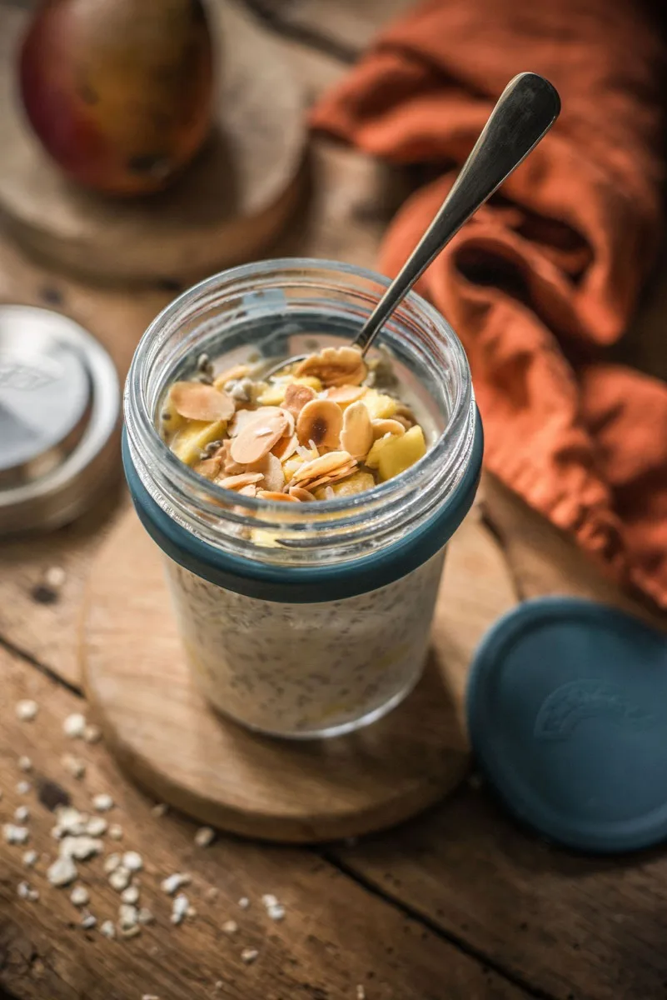
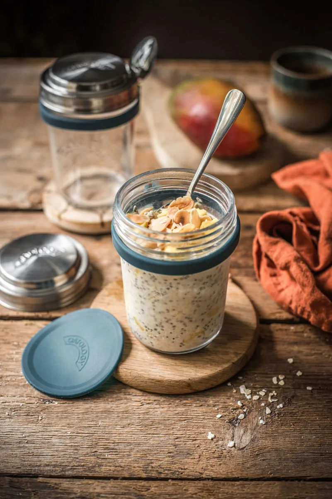

Mango & Coconut Overnight Oats
Mango and coconut overnight oats take about 5 minutes to prepare: stir 50g rolled oats, 140ml coconut milk, 1 tbsp chia seeds, ½ tsp vanilla, a pinch of salt, ½ a diced mango, and 1½ tsp desiccated coconut in a jar, then refrigerate overnight. By morning they are creamy, gently tropical, and ready to eat cold. One jar comes to roughly 400 calories, with about 10g of protein and 11g of fibre.
It is one of two recipes we filmed properly (21 seconds, below). Watch it made, then let the fridge do the work.

Watch it made (21 seconds)
The whole recipe, start to fridge.
The recipe
Ingredients
- 140ml coconut milk (just below the milk line)
- 50g / generous ½ cup rolled oats (one lid)
- 1 tbsp chia seeds
- ½ tsp vanilla extract
- ½ mango, diced
- 1½ tsp desiccated coconut
- A pinch of salt
- Toasted almonds, for topping (optional)
Method
- Add 140ml coconut milk just below the milk line on your jar.
- Measure and add one portion of oats (50g) using the lid.
- Stir in the chia seeds, vanilla extract, and a pinch of salt.
- Add the diced mango and desiccated coconut. Stir well until fully combined.
- Cover and refrigerate overnight.
- Top with toasted almonds before serving, if desired.
Tips and variations
- More protein: coconut drink carries very little, so stir in a spoonful of thick Greek yoghurt (no longer vegan) or a scoop of unflavoured protein powder.
- No fresh mango: frozen diced mango straight from the bag, or tinned mango in juice, drained well.
- Extra tropical: swap the almonds for a scatter of toasted coconut flakes on top.
The jar we make it in
Every recipe on this site is written around the OATOLOGY jar: the lid measures the oats, the milk line measures the milk, and the sealed lid means it travels without leaking. No scales, no guesswork. Your own jar works too, anything sealable with room for a good stir.
Get the OATOLOGY jar on Amazon 2-pack, amazon.co.ukYour questions, answered
How long do mango and coconut overnight oats last in the fridge?
Mango and coconut overnight oats last up to 3 days in a sealed jar in the fridge, kept at 5°C or below (the Food Standards Agency's recommended fridge temperature). Diced mango keeps its colour far better than banana, so it can chill in the jar from the start. Add the toasted almonds fresh so they keep their crunch.
Can you use tinned coconut milk for overnight oats?
Yes, you can use tinned coconut milk for overnight oats, but dilute it: it is far richer than the drinking kind, so mix half tinned milk and half water to make up the same 140ml. Straight from the tin it sets very thick and heavy. Carton coconut drink gives the lighter result we make in the video.
Can you make mango coconut overnight oats with frozen mango?
Yes, frozen mango works well in mango coconut overnight oats: dice it small, stir it in still frozen, and it thaws in the fridge overnight while the oats set, releasing its juice into the jar as it goes. No need to defrost first. It also makes this a year-round jar rather than a mango-season one.
Are mango and coconut overnight oats vegan?
Yes, mango and coconut overnight oats as written are fully plant-based: oats, coconut milk, chia seeds, vanilla, mango, desiccated coconut, salt, and almonds. There is no dairy and no honey to swap out. Check your coconut drink's label if you want one fortified with B12 and calcium, which many are.
Are mango and coconut overnight oats good for you?
Mango and coconut overnight oats are a lighter jar than our nut-butter recipes: roughly 400 calories with about 10g of protein and 11g of fibre, made with coconut drink from a carton. The toasted almonds add crunch and about 60 more calories. Exact numbers shift with your milk and toppings.
A closer look



More overnight oats
Peanut Butter & Banana, Chocolate & Raspberry, Banana Bread, and five more.
See all 8 recipes